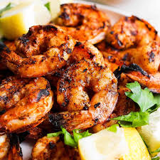
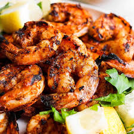

Spicy shrimp is a flavorful and bold dish that combines the sweetness of fresh shrimp with the heat of chili peppers and aromatic spices. Often marinated in a blend of garlic, paprika, cayenne, and citrus juice, the shrimp are quickly seared or grilled to lock in flavor while maintaining their tender, juicy texture.
The heat level can be adjusted to taste, making it a versatile favorite for spice lovers. Served over rice, in tacos, or on its own with a squeeze of lime, spicy shrimp delivers a satisfying kick and a burst of coastal flavor in every bite.
Ingredients
⅓ cup olive oil
¼ cup sesame oil
¼ cup chopped fresh parsley
2 tablespoons hot sauce
2 tablespoons minced garlic
1 tablespoon ketchup
1 tablespoon Asian chile paste
1 teaspoon salt
1 teaspoon black pepper
3 tablespoons lemon juice
2 pounds large shrimp, peeled and deveined
12 wooden skewers, soaked in water
Steps
Whisk together the olive oil, sesame oil, parsley, hot sauce, minced garlic, ketchup, chile sauce, salt, pepper, and lemon juice in a mixing bowl. Set aside about 1/3 of this marinade to use while grilling.
Place the shrimp in a large, resealable plastic bag. Pour in the remaining marinade and seal the bag. Refrigerate for 2 hours.
Preheat an outdoor grill for high heat. Thread shrimp onto skewers, piercing once near the tail and once near the head. Discard marinade.
Lightly oil grill grate. Cook shrimp for 2 minutes per side until opaque, basting frequently with reserved marinade.
 
